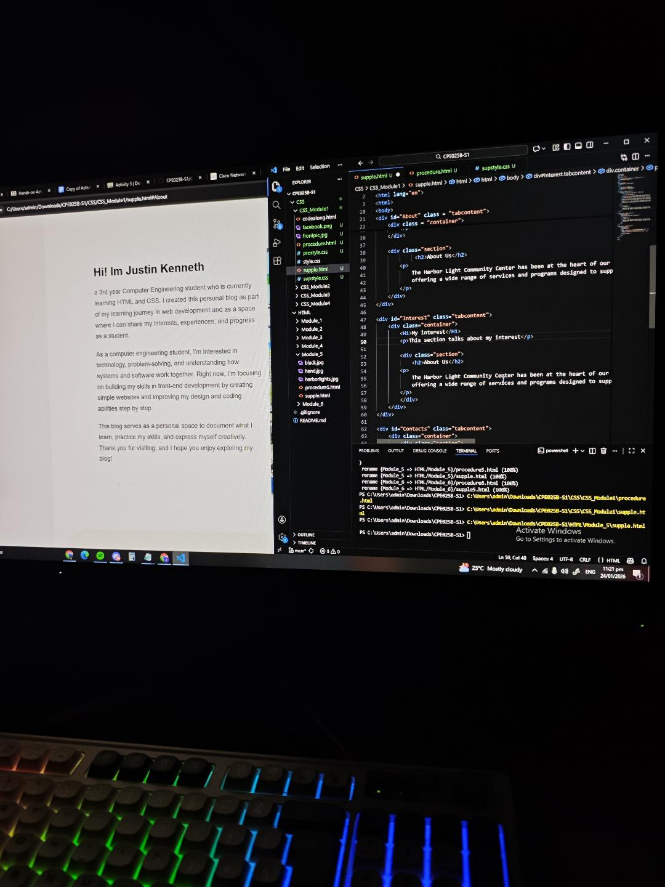

Welcome to my Personal Blog
a 3rd year Computer Engineering student who is currently learning HTML and CSS. I created this personal blog as part of my learning journey in web development and as a space where I can share my interests, experiences, and progress as a student.
As a computer engineering student, I’m interested in technology, problem-solving, and understanding how systems and software work together. Right now, I’m focusing on building my skills in front-end development by creating simple websites and improving my design and coding abilities step by step.
This blog serves as a personal space to document what I learn, practice my skills, and express myself creatively. Thank you for visiting, and I hope you enjoy exploring my blog!
The Harbor Light Community Center has been at the heart of our community for over 30 years, offering a wide range of services and programs designed to support and enrich the lives of our residents.

My main focus is improving my HTML and CSS skills, with practical applications like creating responsive layouts, fixing container widths, and mastering design consistency. I want to leverage these skills to land a job in web development by building a strong portfolio of projects.
I’m also eager to learn JavaScript to make my web pages interactive and dynamic, applying it alongside my HTML and CSS knowledge. My goal is to understand how all three which are HTML, CSS, and JavaScript work together to create modern, functional websites.
Ultimately, I aim to bridge the gap between learning and professional application, continuously improving my coding skills while preparing to contribute effectively in a web development role.
The Harbor Light Community Center has been at the heart of our community for over 30 years, offering a wide range of services and programs designed to support and enrich the lives of our residents.